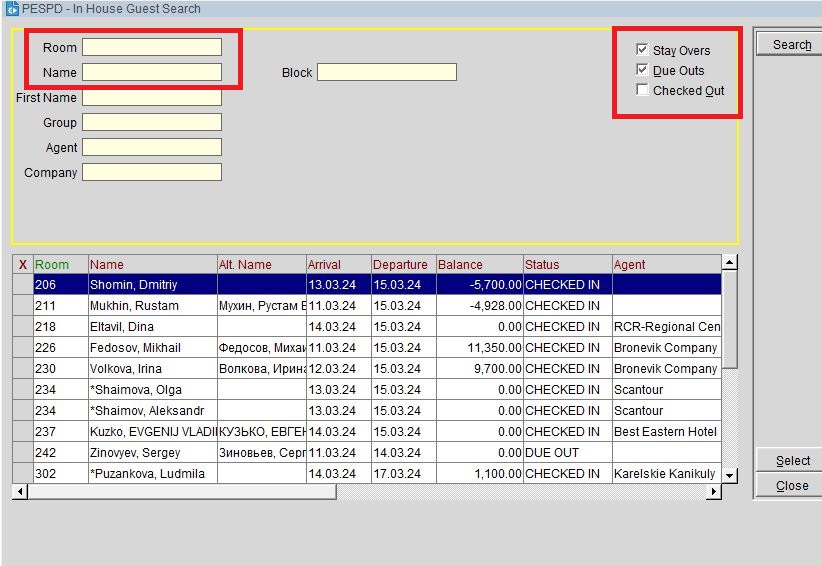

Если гость оплачивал сам, обязательно спрашиваем, нужен ли ему счет.
Выселение номеров происходит через Cashiering → Billing.
В этом окне, справа, есть три фильтра: 1) Stay Overs, 2) Due Outs, 3) Checked Out.
Чтобы посмотреть все номера на выезде, достаточно оставить галочку Due Outs.
У гостей на выезде, в поле Balance должно быть 0.
Прежде чем начислять оплаты на Яндекс и Комфорт Букинг, необходимо проверить подтверждение бронирования. Если сумма сходится, начислять оплаты и выселять.
Yandex Payment: Payment → 9019 → Post → Check Out
Site Payment: Payment → 9081 → Post → Check Out
Как правило, ночной супервайзер начисляет эти оплаты в свою смену. При выселении, распечатается фискальный чек, прикрепить его к фолио, подписаться, поставить круглую печать, фолио с чеком можно отдать гостю.